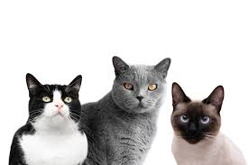

Gatti neri: storia, provenienza e curiosità
Informazioni complete sui gatti neri: genetica, miti, cura e consigli per l'adozione.
Provenienza e genetica
Origine biologica
I gatti neri non sono una razza distinta: il colore è il risultato di varianti genetiche che aumentano la produzione di melanina. Queste varianti possono essere trasmesse da genitori a cuccioli e si ritrovano in molte razze e popolazioni feline in tutto il mondo.
Varianti di nero
Esistono sfumature diverse: "solid black" (nero uniforme), "black smoke" (pelo scuro con radice più chiara) e riflessi blu/ramati dovuti ad altre combinazioni genetiche. Il gene `B` (per la melanina) e altre modificazioni influenzano il risultato finale.
Storia culturale
Antichità e rispetto
In molte civiltà antiche, come l'Egitto, i gatti erano venerati — anche quelli scuri — e considerati portatori di protezione. In Giappone e tra i marinai europei si diffusero credenze positive legate ai gatti neri.
Medioevo e superstizioni
In Europa medievale il gatto nero diventò simbolo di stregoneria: le leggende sulle trasformazioni delle streghe e sui "famigli" hanno alimentato paure che si sono propagate nei secoli successivi.
Riscatto moderno
Oggi molte organizzazioni lavorano per sfatare i miti e promuovere l'adozione. I gatti neri sono apprezzati per il loro aspetto elegante e il loro temperamento, identico a quello di gatti di altri colori.
Salute e cura
Consigli pratici
Alimentazione equilibrata, vaccini, sterilizzazione e controlli periodici dal veterinario sono le basi per tutti i gatti. Il pelo scuro può nascondere segni di parassiti o ferite, quindi ispezioni regolari sono utili.
Comportamento
Il colore non determina il carattere: affetto, curiosità e personalità dipendono da genetica complessiva, socializzazione e ambiente.
Adozione e consigli
I rifugi spesso segnalano che i gatti neri restano più a lungo in cerca di casa a causa dei pregiudizi. Se pensi di adottare, considera questi punti: preparare casa, scegliere un veterinario, abituare il gatto gradualmente e offrirgli stimoli e gioco.
Curiosità e miti sfatati
- I gatti neri non portano sfortuna: è una superstizione culturale.
- Non sono più aggressivi o meno affettuosi rispetto agli altri gatti.
- In alcune culture, attraversare la strada con un gatto nero è considerato segno di buona fortuna.
Galleria

{kind=link}


